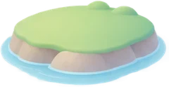
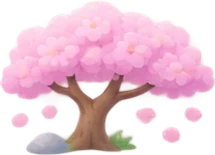
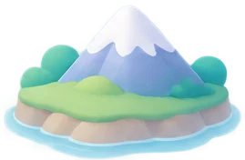
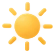

Самая сильная связь сверху крупно, с двумя её островами, как на скриншоте 5 для стора (идея сессии App Store), и «On other days almost never» сразу словами. Остальные связи — две метки и короткое «когда» (вариант 2). Нажатие открывает карточку: объясняющее предложение, дни точками, цифры и вопрос «что раньше?».




On other days almost neverThe days you argue with your partner mostly fall on days you feel drained after work
12 of 14 times · on other days almost never: 2 of 45What comes first, do you think?